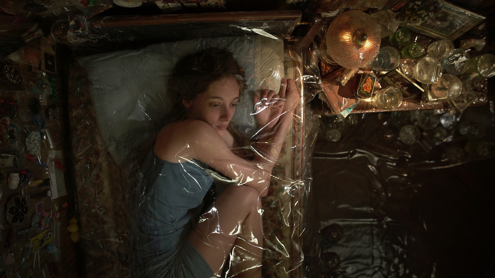
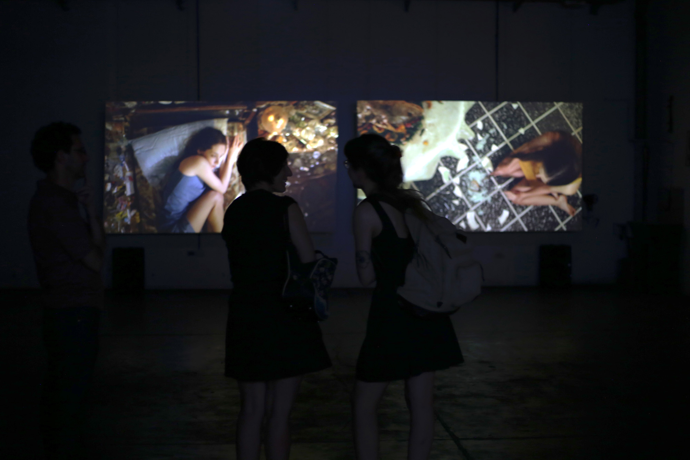
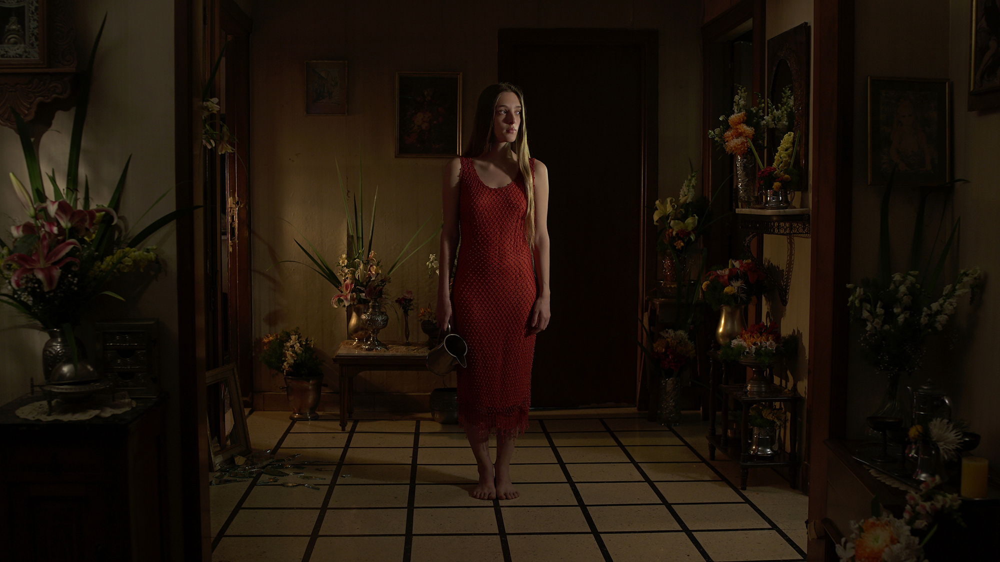

leal
2017 - videoinstalación co-creada con Guadalupe Sierra

Leal - o la tanatopraxia del arte audiovisual - es una videoinstalación que indaga sobre el letargo ante un devenir temporal inexorable. Irrealidades expandidas, proyectación de futuros
posibles, deseos de una suspensión temporal que irreversiblemente sucumbe.


Exhibiciones y premios
- Mención del Jurado en el 106° Salón Nacional de Artes Visuales, Instalaciones y medios alternativos, Buenos Aires, Argentina
- Ganadora Concurso Mejor Videoinstalación de la 3era Bienal Nacional de Diseño UBA
- Selección Proyector Plataforma de Videoarte, 2018, Casa de América, Madrid, España, 2018
- Mención Mejor Montaje en el Festival Audiovisual de Bariloche, Argentina, 2018.
- Mención especial en el Festival La mujer y el cine, MALBA, Buenos Aires, Argentina, 2018.
- Selección en la Convocatoria Artes Visuales 2017 del Centro Cultural San Martín, Buenos Aires.
- Selección Nano Festival de fotografía, Convocatoria Cuerpo, FoLa, Argentina.
- Selección Oficial Festival ADF de fotografía cinematográfica Competencia Nacional, Argentina, 2017.
- Pantalla UBA, Festival Internacional de Cine de Mar del Plata, Argentina, 2017.
- Selección Oficial Festival Internacional de Videoarte, 2017.
- Exhibición Satélite XIII, Centro Hipermediático Experimental Latinoamericano, Buenos Aires, diciembre 2016.
Invitación:
▪ Mesa “PERSPECTIVAS DE FUTURO. APORTES DE LA PANTALLA UBA” junto a Carlos Trilnick, Damian Zantleifer y Anabella Speziale en el 32º Festival Internacional de Cine de Mar del Plata.
- - - - - - - - - - - - - - - - - - - - - - - - - - - - - - - - - - - - - - - - - - - - - - - - - - -
2017 - two channel video installation co-created with Guadalupe Sierra
Leal (Loyal) - or the thanatopraxy of audiovisual art - is a video installation that inquires about lethargy in face of the inexorable passage of time. Expanded unrealities, projections of possible futures, wishes of a temporal suspension which irrevocably succumbs.
Exhibitions and awards
- Special Jury Mention, 106º National Salon of Visual Arts, New media art category, National Ministry of Culture, 2017, Buenos Aires, Argentina
- 3º National Design Biennial UBA award, Video Art and Installation category, 2017, Buenos Aires, Argentina
- Official selection Proyector, video art festival, 2018, Casa de América, Madrid, Spain
- Best Film Editing mention, Bariloche Film Festival, 2018, Bariloche, Argentina
- Special Jury Mention, Women and Film Festival. MALBA, 2018, Buenos Aires, Argentina
- Solo show Visual Arts Open Call, Centro Cultural San Martín, 2017, Buenos Aires, Argentina
- Nano Festival of photography. 2017, FoLa, Buenos Aires, Argentina
- Official Selection ADF Cinematography Film Festival, 2017, Buenos Aires, Argentina
- Pantalla UBA, 32° Mar del Plata Film Festival, 2017, Mar del Plata, Argentina
- Official Selection International Video Art Festival (FIVA). Centro Cultural San Martín, Buenos Aires, Argentina
- Satélite XIII Group show, Centro Hipermediático Experimental Latinoamericano, Buenos Aires,
Argentina